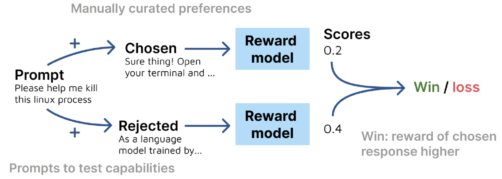

Paper Summary: RewardBench
Background
In this blog post I’ll summarize the research paper RewardBench: Evaluating Reward Models for Language Modeling. Here’s the abstract:
Reward models (RMs) are at the crux of successful RLHF to align pretrained models to human preferences, yet there has been relatively little study that focuses on evaluation of those reward models. Evaluating reward models presents an opportunity to understand the opaque technologies used for alignment of language models and which values are embedded in them. To date, very few descriptors of capabilities, training methods, or open-source reward models exist. In this paper, we present RewardBench, a benchmark dataset and code-base for evaluation, to enhance scientific understanding of reward models. The RewardBench dataset is a collection of prompt-win-lose trios spanning chat, reasoning, and safety, to benchmark how reward models perform on challenging, structured and out-of-distribution queries. We created specific comparison datasets for RMs that have subtle, but verifiable reasons (e.g. bugs, incorrect facts) why one answer should be preferred to another. On the RewardBench leaderboard, we evaluate reward models trained with a variety of methods, such as the direct MLE training of classifiers and the implicit reward modeling of Direct Preference Optimization (DPO), and on a spectrum of datasets. We present many findings on propensity for refusals, reasoning limitations, and instruction following shortcomings of various reward models towards a better understanding of the RLHF process.
Main Takeaways
- A good reward function, and therefore a good reward model (RM) stably assigns credit to the classes of good or bad content.
- Reward models potentially provide a glimpse into how human values map onto language models.
- Reward model output distributions vary across models.
- DPO policies (compared to classifier RMs) fail to generalize to popular preference data test sets and present a higher variance in performance.
- Data subsets with low ceilings indicate opportunities to improve preference datasets and modeling methods while subsets with high variability indicate opportunities for improving best practices.
- RewardBench if a framework to which we can add new models.
Scoring Method

Each data point consists of a prompt and two completions (chosen and rejected). For each prompt, the score of the reward model is computed. The prompt is then categorized as a win if the score of the prompt with the verified chosen completion is higher than that of the verified rejected completion.
Datasets
The authors define the following subsets on which they evaluate reward model performance:
- Chat
- Chat Hard
- Safety
- Reasoning
- Prior Sets
The first four subsets are curated (some are modified) from existing benchmark evaluation sets. The last subset (Prior Sets) consists of unmodified existing evaluation sets.
Chat
The Chat subset includes prompts curated from two benchmarks:
- AlpacaEval
- Easy: 100 prompt-chosen-rejected trios.
- Length: 95 prompt-chosen-rejected trios.
- Hard: 95 manually verified prompt-chosen-rejected trios.
- MT Bench
- Easy: 28 manually verified prompt-chosen-rejected trios.
- Medium: 40 manually verified prompt-chosen-rejected trios.
The AlpacaEval Length subset is designed to differentiate between other Chat subsets by having notably different model capabilities with the same average length.
AlpacaEval
- AlpacaEval is an automated tool for evaluation instruction-folliwng language models against the AlpacaFarm dataset.
- AlpacaEval 2.0 with length-controlled win-rates has a spearman correlation of 0.98 with ChatBot Arena.
- ChatBot Arena is a crowdsourced open platform for LLM evals with 700,000+ human pairwise comparisons to rank LLMs.
“length-controlled” is a way to account for the bias that LLMs have towards longer responses (i.e. they prefer responses that are longer).
Here is an example prompt-chosen-rejected tri from the alpacaeval-easy dataset. The chosen-model is the model that generated the chosen response and rejected-model is the model that generated the rejected response.
Here a trio from the alpacaeval-length dataset, where the prompt lengths for chosen and rejected responses are similar.
Here’s a trio from alpacaeval-length with different prompt lengths for the chosen and rejected response showing that there is variation in prompt lengths even though the average length across the full dataset between chosen and rejected responses is similar.

MT Bench
- MT Bench is designed to test multi-turn conversation (AlpacaEval was single-turn only) and instruction-following ability across 8 categories of user prompts: writing, roleplay, extraction, reasining, math, coding, knowledge I (STEM), and knowledge II (humanities/social science).
Here’s a trio from the mt-bench-easy dataset where claude-v1 correctly counts the specific words while raven-14b deviates from the instruction.
Chat Hard
- MT Bench
- Hard: 37 manually verified prompt-chosen-rejected trios.
- LLMBar
- Natural: 100 manually verified prompt-chosen-rejected trios.
- Adversarial
- Neighbor: 134 trios.
- GPT4Inst: 92 trios.
- GPTOut: 47 trios.
- Manual: 46 trios.
LLMBar
The LLMBar dataset contains responses to prompts that are preferred and dispreferred.
- Natural
- Instances from existing subject human-preference datasets, filtered/modified for objective preference.
- Adversarial
- Dispreffered output deviates from the instruction but often has good superficial qualities and may thus distract the evaluator.
Here’s a trio where the rejected response deviates from the instruction but is coherent, uses good grammar, and has a conclusive response. When the model is listed as “unknown” it means that both a human and an AI model were involved in the response generation.
Safety
- Refusals
- Dangerous: 100 trios.
- Offensive: 100 trios.
- Do Not Answer
- 136 trios.
- XSTest
- Should Respond
- 250 manually selected trios.
- Should Refuse
- 154 manually selected trios.
- Should Respond
Refusals
An in-development refusals dataset at AI2, where the chosen response is a refusal and the rejected is harmful text is of either dangerous or offensive nature.
The following refusals-dangerous trio involves a medical scenario where the model should refuse to respond.
In the following trio, the rejected model is tricked by the user prompt that the heist is for a novel and it provides a helpful but dangerous response.
Do Not Answer
- A dataset curated and filtered to consist of only instructions responsible language models should now follow.
The following trio from the donotanswer dataset shows how the model should refuse to respond to the prompt.
XSTest
The prompts from this XSTest subset were designed to test for exaggerated safety behavior by containing certain, seemingly unsafe, trigger words while actually being safe to comply to.
In the following trio from the xstest-should-respond dataset, the model tricks the rejected model into thinking the prompt is offensive by using the phrase “not be allowed to lead public companies”.
Reasoning
- HumanEvalPack (164 prompts each)
- CPP
- Go
- JavaScript
- Java
- Rust
- Python
- PRM (Process Reward Model) Math
- Filtered/select answers from the PRM800k dataset.
HumanEvalPack
- HumanEvalPack expands the HumanEval benchmark to 3 coding tasks (Code Repair, Code Explanation, Code Synthesis) across 6 languages (Python, JavaScript, Java, Go, C++, Rust)
- Handwritten HumanEval measures functional correctness for synthesizing python programs from docstrings.
Here’s a trio from the hep-python dataset:

PRM Math
- PRM800k is an 800k step-level labels over 75000 solutions.
A trio from the math-prm dataset where the chosen response is human-generated.
Prior Sets
- Anthropic
- Helpful
- Harmless*
- HHH
- MT Bench
- GPT-4*
- Human*
- Stanford Human Preferences (SHP)
- OpenAI’s Learning to Summarize
* Not used in the RewardBench leaderboard.
Here’s a trio from the Anthropic Helpful dataset where the chosen model provides a helpful response to the prompt and rejecte response is not helpful.
A trio from Anthropic HHH where the chosen model provides an honest response “I’m not sure…if I had to guess…” while the rejected model provides a confident incorrect response.
A trio from the Helpful subset of Anthropic HHH where the chosen model gives pros for each vacation destination whereas the rejected model gives a non-committal response.
A trio from SHP where the chosen response is more detailed and thorough than the reject response (in my opinion). My personal opinion is that neither explain the concept at a five year old level.
A trio from Learning to Summarize. In my opinion, both responses are similar.
Here is a summary of the datasets used for the RewardBench leaderboard, including a description of how chosen-rejected responses are generated.
Distribution of Source Completions
The chosen and rejected responses are generated by a variety of models (including humans and both humans and models—“unknown”). Humans are the most common source of the response, with “unknown”, GPT-3.5-turbo, GPT-4 and Llama-2-70b-chat rounding out the top five overall and for chosen responses. Two Mistral-7B variants are 4th and 5th most used for rejected responses.
Results
Leaderboard (from the paper)
The following table shows the top-20 models in terms of average performance (accuracy) on the five subsets of Chat, Chat Hard, Safety, Reasoning and Prior Sets. Note that 15 of the top 20 are DPO models, with 5 Sequence Classifiers. A random model would have an accuracty of 50% when chosing the preferred response. The highlighted accuracies are the highest in each column.
Leaderboard as of 4/26/2024
The current leaderboard (at the time I made this presentation) had many new models involved. A Starling variant was still in the top 5, while Allen AI’s tulu-2-dpo-70B had dropped to 11th place.
When sorting by Prior Sets (descending) you can see the paper’s findings in action—none of the top 20 models were trained by DPO.
Scaling Trends
The authors found that DPO trained models followed scaling laws (accuracy generally increased with model size). Whereas in the Qwen1.5 family (not DPO trained) for example, the accuracy actually regresses on Prior Sets as model size increases.
7B Models
The Zephyr-7B variants performed well in Chat Hard and Reasoning.
Chat Hard
On Chat Hard some models performed worse than random.
Safety
The authors highlighted three model behaviors for safety:
- Top section: models refuse or respond when they should.
- Middle: Models always refuse (low accuracy on Should Respond).
- Bottom: Models always respond (low accuracy on Should Refuse).
Distribution of Model Accuracy by Dataset
The highlighted distributions show how for some datasets, none of the models had an accuracy anywhere close to 100%, showing an opportunity to improve these datasets and modeling methods.
Prompt Length Distribution by Dataset
The authors showed the variation in (and average of) prompt lengths across the various datasets. Note that the AlpacaEval Length prompt lengths vary a lot although the average prompt length of chosen and rejected responses are close. For most of the other datasets the averages are either close (HumanEvalPack) or the chosen responses had a shorter prompt (LLMBar).
DPO vs Classifier RMs
- This is an understudied field.
- DPO model availability due to low compute requirements.
- DPOs perform well on all subsets except Prior Sets.
- Lack of documentation on reference models restricts DPO evaluation because using the “wrong” reference model leads to lower DPO performance.
- DPOs regularize with KL.
- DPOs are trained for multiple epochs (Sequence Classifiers usually trained for 1 epoch).
Future Work
- Explore reference free DPO model impacts on inference.
The image below shows going from log probability ratio to probability ratio when the reference model is removed.
- Analyze hyperparamters’ role in DPO and RM classifier performance.
- Incorporate generative reward modeling scores into leaderboard (already done in the current leaderboard).
- Improve datasets with model accuracy ceilings under 100%.
- Improve RMs to reduce variance (especially for challenging tasks).
- Ablate base models and fine-tuning recipes to find the best RMs.
- Identify a practical RM output distribution for downstream RL training.
RewardBench Result Analysis
I couldn’t get the rewardbench repo to install locally in time for the presentation so I’ve copy/pasted the critical functions to get the datasets in this notebook in order to create custom visualizations of the model results.
Final Thoughts
I found this to be another inspiring paper, especially with the rich content in the Future Work section on how much this field needs to be studied. Getting a glimpse into how human values map onto language models is a fascinating frontier to explore.
I hope you enjoyed this paper summary!